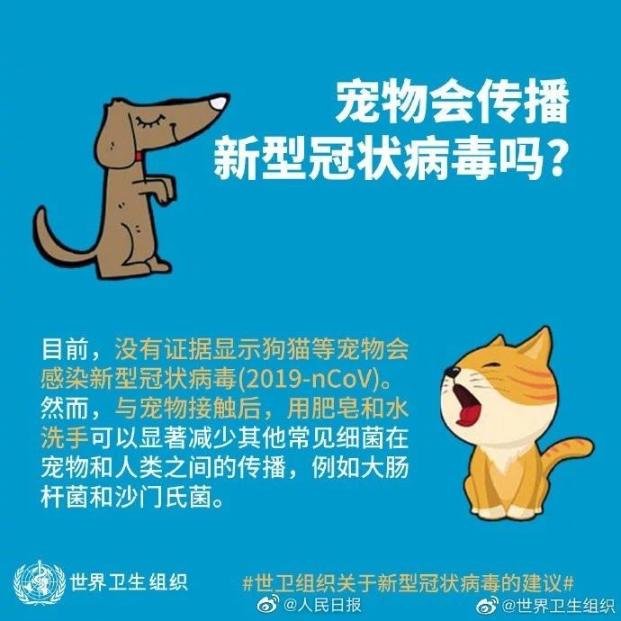
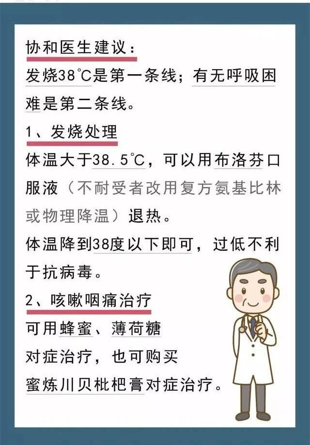
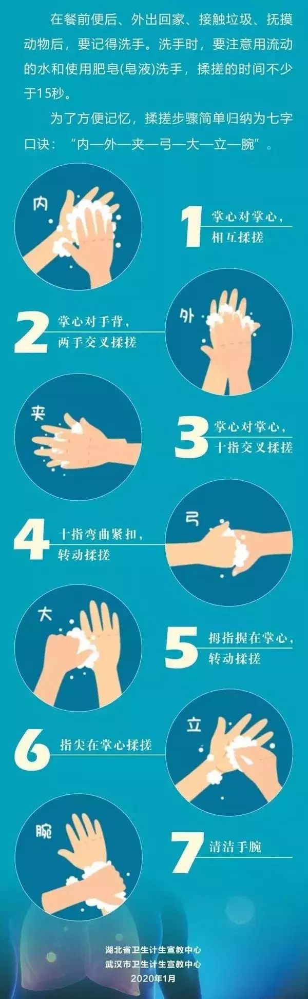

在国家卫健委召开的新闻发布会、湖北举行第十三场疫情防控例行发布会上，不少记者针对有关新型冠状病毒感染的肺炎疫情提出了疑问：
病毒最多存活几天？
宠物会将病毒传染给人？
人和人保持多少距离合适？
外出或坐电梯需要戴手套吗？
粪口传播将给疫情带来哪些困难？
每个人都关注这场突然爆发的新型冠状病毒肺炎，根据这些疑问，专家的最新回应来了↓↓
病毒最多存活几天？
温度湿度合适病毒可能存活数天
国家卫健委专家组成员、北京地坛医院感染二科主任医师蒋荣猛：
这个病毒，它是通过飞沫和接触来传播的。飞沫的传播距离是非常有限，从人体出来以后很快就沉降了，所以不会在空气当中飘浮。
飞沫可以沉降在物体表面，或者通过粘有病毒的手污染我们接触到的物体表面，比如门把手、电梯按钮。现在研究发现，病毒在这些光滑的物体表面，可以存活数小时。如果温度、湿度合适有可能存活数天，比如在温度20℃的环境，湿度40%到50%，有研究发现病毒有可能存活达到5天。所以，洗手非常重要。
宠物和人之间会传染吗？
目前未发现新型肺炎病毒宠物传染人
国家卫健委专家组成员、北京地坛医院感染二科主任医师蒋荣猛：
目前研究显示，冠状病毒有50多种，四个属，可以感染到很多动物，但这之间有物种屏障，并非随意相互感染，能感染人的只有7种，目前为止还未发现有宠物感染病毒，传染给人，也没发现患者感染，传染给宠物。

粪口传播给疫情带来哪些困难？
目前未发现粪口传播的病例
国家卫健委专家组成员、北京地坛医院感染二科主任医师蒋荣猛：
虽然从一些患者粪便当中发现了病毒核酸，但是目前还没有分离到病毒，进一步的情况还需要观察。我们所谓的粪-口就是粪便污染了水，或者污染了食物，人把这个水喝进去或者把食物吃进去，造成传播，这叫粪-口传播。目前我们还没有发现通过这种方式传播的病例。
出现症状都要去医院隔离？
先进行自我评估
国家卫健委专家组成员、北京地坛医院感染二科主任医师蒋荣猛：
建议大家先做自我评估，如，有没有家庭成员共同发病、症状轻还是重等。若体温没有超过38℃、没出现过呼吸困难，可以早期居家观察，但是最好要单人间隔离，和家人保持一米以上的距离，避免传染，注意手卫生等，同时每天监测两次体温。轻病人7-10天就可缓解，如果有加重，需随时去医院。各地要根据疫情情况来判断，从武汉目前的情况看，建议有咳嗽、发热症状都要去做筛查。

中医能治新型肺炎吗？
中西医结合治疗新型肺炎是好办法
中国工程院院士、天津中医药大学校长张伯礼：
对新型肺炎的中度病人、轻度病人，经过中药治疗容易痊愈，中度病人向重症转化明显减少；对重度、危重度病人，可以稳定血氧饱和度、改善呼吸困难，有一定辅助治疗作用；对恢复期病人，虽然没有传染性可以出院的，后期这段用中药治疗，避免一些后遗症。从这几个方面都体现了中医药一些优势，采用中西医结合的办法是个好办法。
外出或坐电梯要带手套吗？
直接接触污染物需要戴手套
国家卫健委高级别专家组成员 李兰娟：
我认为没有必要，我是传染科的医生，我到病房里去见了很多有传染性的病人，无非也就是检查好以后洗个手，用流水冲洗就可以了。只有直接接触污染物的时候才需要戴手套，一般是不需要戴手套的，只要你勤洗手，回家率先洗个手就可以了。
一张图告诉你如何正确洗手↓

人和人保持多少距离合适？
在公共场所保持一定的距离
国家卫健委高级别专家组成员 李兰娟：
我们原来写的是1米5，对面人如果是健康的，应该也不存在这个问题。主要是担心不认识的人，要保持一定的距离，避免有传播的可能。我希望各个地方对接触的人查得严一点，这样有可能面对面传播的机会就会大大减少。在武汉市区我认为这个距离是非常必要的。